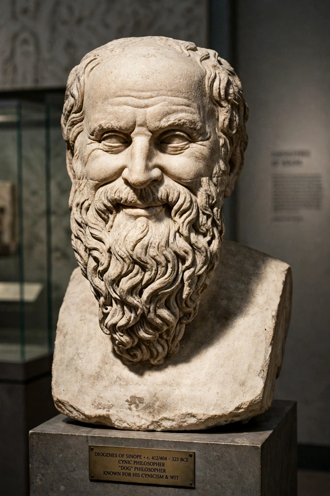

| Born | c. 300 BCE, Gadara, Coele-Syria |
|---|---|
| Died | c. 260 BCE, Thebes (by suicide, according to tradition) |
| School | Cynicism |
| Known for | Originator of Menippean satire |
Menippus of Gadara (Greek: Μένιππος ὁ Γαδαρεύς; fl. 3rd century BCE) was a Cynic philosopher and satirist, originally a slave, who purchased his freedom and eventually became a citizen of Thebes. His works, which are all lost, were an important influence on later literature: he is the originator of the prose-and-verse satirical form known as Menippean satire, imitated by Varro, Seneca, Petronius, and later writers.

According to Diogenes Laërtius, Menippus was a Phoenician from Gadara who was enslaved to a citizen of Pontus, later freed, and amassed wealth through money-lending before losing it and hanging himself. As a Cynic he mocked human pretensions, especially the vanity of rival philosophers, and was nicknamed "the grave-mocker" for his mixture of jest and earnest (the spoudogeloion).
Diogenes Laërtius lists works including the Nekyia (a descent to the underworld), Wills, Letters, the Sale of Diogenes, and an Arcesilaus. His satires feature dialogues of the dead, journeys to the underworld, and flights to heaven from which the affairs of men appear absurd — motifs taken up most famously by Lucian, who made Menippus a recurring character and narrator in works such as the Dialogues of the Dead and Icaromenippus.
Menippean satire became a lasting genre, passing through Varro's Saturae Menippeae and Seneca's Apocolocyntosis to Petronius, Apuleius, and much later to writers such as Rabelais, Swift, and Thomas Pynchon; the critic Mikhail Bakhtin treated the Menippea as a foundational genre for the polyphonic novel.